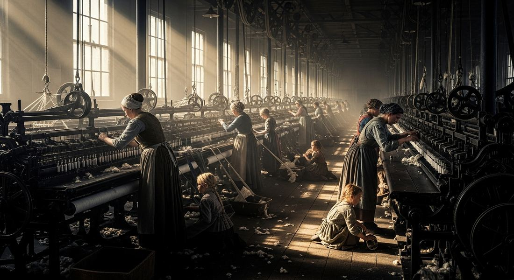
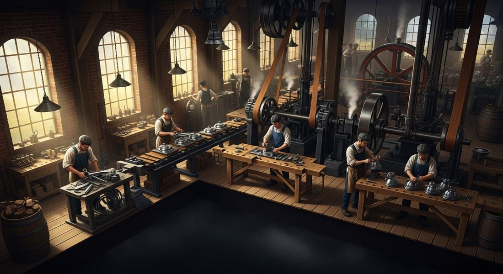
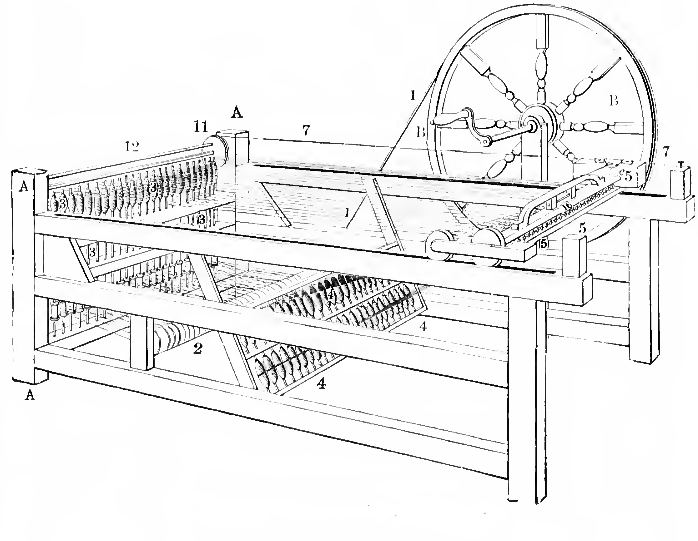

5.3 Industrial Revolution Begins
- LO-A: The factory system: Before factories, most goods were made in homes ("cottage industry") or small workshops. The factory system concentrated production in a single large building with specialized workers, machines, and a set schedule. This produced goods faster and more cheaply than the old system. Division of labor, each worker doing one specific task repeatedly, made factories far more efficient than any individual craftsperson. Britain's textile industry was the first to industrialize, using water and then steam power to run spinning and weaving machines. Seven environmental and institutional factors combined uniquely in Britain: (1) rivers and canals for cheap transportation; (2) abundant coal in Wales and northern England; (3) accessible iron ore; (4) timber; (5) improving agricultural productivity that freed up rural labor for factory work; (6) legal protection of private property and patent rights, which rewarded inventors; (7) accumulated capital from trade and colonial wealth, plus access to colonial raw materials (particularly cotton from India and the American South). No other country had all seven at once. Urbanization was both a cause and an effect: Growing cities provided a labor pool for factories AND a market for manufactured goods. The enclosure movement in Britain's countryside pushed rural peasants off common land, forcing many into cities looking for work, which conveniently supplied factories with workers. This connection between agricultural change, urbanization, and industrialization is a key historical process the AP exam tests.
Try each question before revealing the answer.
1. Why did the Industrial Revolution begin in Britain rather than France, Germany, or China, all of which were also major powers in the 18th century?
2. Before factories existed, most manufactured goods were produced through "cottage industry", workers making goods in their homes. What were the advantages and disadvantages of this system compared to the factory system?
3. The "enclosure movement" in Britain pushed peasants off common land they had farmed for generations. How did this agricultural change connect to the rise of factories?
4. Britain had strong legal protections for private property and patents in the 18th century. Why would this matter for industrial innovation?
5. Rivers and canals are listed as a key factor in Britain's industrialization. Why would water transportation matter so much for industry?
- Explain how environmental factors contributed to industrialization from 1750 to 1900.
Tap a term for its definition.
-
Definition: The shift from hand production to machine-based manufacturing that began in Britain in the mid-18th century and spread across Europe and North America in the 19th century. Significance: Produced the most rapid change in how humans produced goods in all of history; reshaped society, economy, and the environment.
-
Definition: A method of manufacturing in which production is concentrated in a single large building, with workers using machines and divided tasks. Significance: Replaced cottage industry (home-based production); dramatically increased output speed and volume while reducing the skill level needed for individual tasks.
-
Definition: The organization of production so that each worker performs one specialized task repeatedly, rather than one worker making an entire product. Significance: Central to factory efficiency; Adam Smith described it in Wealth of Nations (1776), workers who specialize become much faster and more efficient than generalists.
-
Definition: The pre-industrial system of manufacturing in which workers produced goods in their homes or small workshops, often combining manufacturing with agriculture. Significance: The system replaced by factory production; it was slower and less efficient but gave workers more flexibility and control over their time.
-
Definition: The build-up of wealth (money, equipment, property) that can be reinvested to produce more wealth. Significance: Industrialization required large upfront investments in machines, buildings, and raw materials; Britain's merchant class had accumulated sufficient capital through trade to fund these investments.
-
Definition: The conversion of common lands (shared by peasant communities) into privately owned fields in Britain, beginning in the 17th century and accelerating in the 18th. Significance: Displaced rural peasants, sending many to cities where they became the factory workforce that industrialization required.
-
Definition: The movement of people from rural areas to cities, and the growth of cities as a proportion of the total population. Significance: Both a cause and an effect of industrialization; cities provided labor pools and markets for factories, while factories attracted more workers to cities.
-
Definition: A legal system giving inventors exclusive rights to profit from their inventions for a set period. Significance: Britain's well-developed patent system created financial incentives for innovation, contributing to the flood of mechanical inventions that drove industrialization.
🏭 What Was the Industrial Revolution?
Before roughly 1750, if you wanted a shirt, someone's hands made every thread and every stitch. If you wanted an iron pot, a blacksmith hammered it out by hand. Human muscle and animal power were the only engines of production. This had been true for all of human history.
The Industrial Revolution changed this permanently. Beginning in Britain in the mid-18th century, machines powered by water and then steam began doing the work that human hands had always done, spinning thread, weaving cloth, hammering iron. These machines could work faster, longer, and more consistently than any human worker. The result was an explosion in how much goods could be produced, how cheaply they could be sold, and how quickly economies could grow.
But why Britain? And why in the mid-18th century? The answer is a combination of geographic advantages, economic institutions, and historical timing that came together in one place and one period in a way they didn't anywhere else.

🗺️ The Geographic Factors: Why Britain First
The AP CED lists seven specific factors that contributed to industrialization. Six of them are geographic or environmental:
- Proximity to waterways, rivers and canals: Before railroads, water transportation was the cheapest way to move heavy goods. Britain had navigable rivers throughout its territory, and entrepreneurs built a canal system in the late 18th century that connected inland areas to ports. Coal, iron, and finished goods could move cheaply from mines to factories to markets. Without cheap transportation, factory production was not profitable.
- Coal deposits: Coal was the fuel that powered steam engines, and steam engines powered everything else. Britain had abundant, accessible coal deposits, particularly in Wales, Yorkshire, and the northeast. These were often near rivers, making it practical to mine and transport coal cheaply.
- Iron ore: Iron was the material that machines were made from. Britain had iron ore deposits that could be processed (using coal-fired furnaces) into the iron and later steel that machinery required. The combination of coal and iron in close proximity was critical.
- Timber: Wood was still needed for construction, ships, and early machinery. Britain's forests, though diminishing, provided this resource.
- Improved agricultural productivity: New farming techniques, crop rotation, selective breeding, and the enclosure movement, made British agriculture more productive, which meant fewer people were needed to grow food. Surplus rural workers moved to cities, providing the labor pool that factories required. Agricultural improvement and industrialization were connected.
- Access to foreign resources: Britain's colonial empire gave it access to raw materials, particularly cotton from India and the American South, that fueled its textile industry. Without cheap cotton imports, British cotton mills would not have had the raw material to process.
🏦 Capital and Law: The Institutional Factors
Geography alone doesn't explain British industrialization. Two institutional factors mattered just as much:
Legal protection of private property: British law strongly protected property rights, including the right to own machines, land, and the profits of your business. The patent system gave inventors a legal monopoly on their inventions for a set period, meaning they could profit from their ideas before competitors could copy them. James Watt patented his improved steam engine in 1769. Richard Arkwright patented his water frame (a cotton-spinning machine) in 1769 as well. These patents made both men wealthy and incentivized further invention. Other countries had inventors too; Britain uniquely had a legal system that rewarded them financially.
Capital accumulation: Factories are expensive to build. Machines are expensive to buy. Running a factory means paying wages before the goods are sold. All of this requires money upfront, capital. Britain had it. Centuries of international trade, colonial profits, and a well-developed banking system meant that British merchants and landowners had accumulated wealth that they could invest in new manufacturing ventures. The same merchant networks that financed global trade financed early factories.
🏗️ The Factory System and Division of Labor
Before factories, most manufacturing happened in homes or small workshops, the "putting-out" or cottage industry system. A merchant would deliver raw materials (raw wool, raw cotton) to rural workers who would spin or weave at home, then the merchant would collect and sell the finished goods. This system was flexible but slow and inconsistent.
The factory system changed everything. Factories brought workers together in one place, with specialized machines and a set schedule. The key innovation was not just machines. It was the division of labor. Instead of one skilled craftsperson making an entire product from start to finish, each worker in a factory performed one specific task, over and over. One person fed raw cotton into a machine; another operated the spinning machine; another the loom. Each worker became very fast at their one task.


Adam Smith described this in The Wealth of Nations (1776) using the example of pin-making: one worker working alone might make 20 pins a day. Ten workers dividing the task into specialized steps could collectively make 48,000 pins a day. The math is staggering, and it explains why factories so rapidly outcompeted traditional craftspeople.
🏙️ Urbanization: Cities Grow
Factories needed workers. Workers needed to live near factories. The result was rapid, sometimes chaotic urban growth. British cities that barely existed in 1750 became industrial centers with hundreds of thousands of people by 1850.
Manchester, a small market town in 1750, grew to 300,000 people by 1850, becoming the heart of the cotton textile industry. Birmingham grew around metalworking. Leeds around wool textiles. Sheffield around cutlery and steel. Each city's growth was powered by a particular industry.
The workers who filled these cities came from two main sources: rural migrants displaced by the enclosure movement, and immigrants from Ireland (fleeing poverty and famine). They arrived to find cheap, crowded housing; dangerous factory work; and cities that had grown faster than their infrastructure could handle. The consequences of this rapid urbanization, pollution, poverty, disease, are covered in Topic 5.9.
These videos will help you review Industrial Revolution Begins and solidify key concepts before your exam.
- A) The shortage of skilled workers needed to operate new industrial machinery
- B) The reluctance of British aristocrats to invest in commercial manufacturing ventures
- C) The high cost of moving heavy raw materials and finished goods before railroads existed
- D) The competition from French manufactured goods that threatened British markets
- A) Increasing agricultural output to feed the growing urban population
- B) Creating a displaced rural population that moved to cities and became available as factory labor
- C) Providing capital for factory investment by converting common land to profitable private farms
- D) Reducing food prices, which lowered the wages factory owners needed to pay workers
- A) The factory system's most important innovation was the division of labor, not machinery alone
- B) The Industrial Revolution was primarily driven by individual inventors rather than organizational innovation
- C) Early factories were less efficient than cottage industry because of the cost of maintaining machines
- D) The factory system was initially adopted more slowly in Britain than in France or Germany
- A) Government ownership of key industries was essential to early industrialization
- B) High import tariffs protected British manufacturers from foreign competition
- C) The Industrial Revolution was primarily driven by scientific discoveries rather than practical invention
- D) Legal protections for private property created incentives that accelerated technological innovation
- A) The role of government planning in directing workers to industrial centers
- B) The tendency of industrialization to generate urban growth as factories attract workers to industrial centers
- C) The negative impact of cotton textile production on regional agricultural productivity
- D) The competition between British industrial cities for workers from continental Europe
Answer all three parts (A, B, C). Write your response before clicking to see sample answers.
Part A
Identify ONE geographic or environmental factor that contributed to Britain's early industrialization.
Part B
Explain ONE way the factory system changed how goods were produced compared to the cottage industry system it replaced.
Part C
Explain ONE way agricultural changes in Britain contributed to industrialization.
Write a thesis before revealing. A strong thesis: restates the prompt's verb phrase, adds a quantifier, and ends with because [A] and [B].